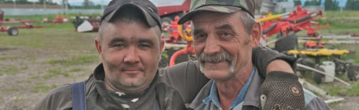

РАБОТА И КАРЬЕРА Миссия нашей фермы — это восстановление крупного сельского хозяйства, именно поэтому мы занимаемся расширением нашего хозяйства и ищем людей к себе команду. Стать частью нашей команды!
Стать частью нашей команды!Команда — это четко отлаженный механизм. Где каждый человек занимает свое определенное место. Все члены группы, как винтики, приводят механизм в движение. В таком рабочем процессе эффективно происходит передача своего опыта другим. Когда студенты приходят к нам на практику, то мы учим их как раз такой эффективной и чёткой командной работе.
Наш девиз: «Делай с нами, делай, как мы!»
- 
ВАКАНСИИ
- 2019
В этом году мы открыли свои первые вакансии
- 5
Актуальных
вакансий - 470
Количество рабочих мест на нашей ферме
ТЕХНИК ПО
от 60.000 тыс./мес. Читать подробнее
ИСКУССТВЕННОМУ ОСЕМЕНЕНИЮГЛАВНЫЙ
от 60.000 тыс./мес. Читать подробнее
ЗООТЕХНИКВЕТЕРИНАРНЫЙ
от 60.000 тыс./мес. Читать подробнее
ВРАЧ-ГИНЕКОЛОГЗАВЕДУЮЩАЯ
от 60.000 тыс./мес. Читать подробнее
СТОЛОВОЙ
В слаженном рабочем процессе происходит и передача опыта начинающим сотрудникам — вчерашним студентам. Когда ребята приходят к нам на практику, помимо основных пунктов
в должностной инструкции, они познают и свой первый опыт работы в команде. Работы — на результат!
МЫ ждём молодых специалистов к нам на работу.
Старт к будущей профессии
К (Ф)Х Зубарева Н.В. — это не только кузница кадров, но и отличная база для подготовки будущих специалистов сельскохозяйственной отрасли. Студенты сельскохозяйственных ВУЗов и СУЗов Красноярского края и республики Хакасия приезжают на производственную практику и постигают специфику аграрного дела. Делать это в современном хозяйстве — особая гордость и своеобразная планка на будущее. На меньшее — наши практиканты уже не согласны! А мы всегда с нетерпением ждем молодых специалистов в нашу команду!
Основные направления, по которым мы осуществляем подготовку:
- агрономия
- ветеринария
- зоотехния
- механизация с/х
- техническое обслуживание
и ремонт автомобильного транспорта - электрификация и автоматизация с/х